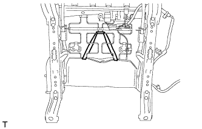
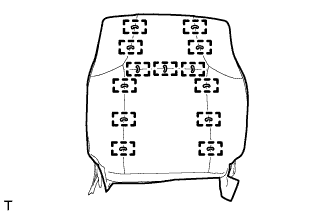

ПОДОГРЕВАТЕЛЬ СПИНКИ ПЕРЕДНЕГО СИДЕНЬЯ (для сидений с электроприводом) > СНЯТИЕ |
| 1. СНИМИТЕ ПЕРЕДНЕЕ СИДЕНЬЕ В СБОРЕ |
Снимите переднее сиденье в сборе (Нажмите здесь).
| 2. СНИМИТЕ ОБИВКУ СПИНКИ РАЗДЕЛЬНОГО ПЕРЕДНЕГО СИДЕНЬЯ |
|  |
Снимите резиновую ленту с пружины подушки сиденья.
 |
Отсоедините разъем подогревателя сиденья и освободите зажим жгута проводов подогревателя сиденья.
 |
Снимите 3 витковые пружины.
Откройте 2 крепления, а затем откройте обивку спинки сиденья.

| *A | для сиденья с тканевой обивкой | *B | для сиденья с кожаной обивкой |
Для моделей с боковой подушкой безопасности переднего сиденья:
Отверните гайку и снимите держатель обивки спинки сиденья с рамы сиденья.
Отсоедините держатель обивки спинки сиденья от подушки спинки сиденья.
 |
С помощью отвертки отцепите 4 захвата и снимите 2 держателя подголовника.
|  |
Снимите витковые пружины и обивку спинки переднего сиденья.
| 3. СНИМИТЕ ПОДОГРЕВАТЕЛЬ СПИНКИ ЛЕВОГО ПЕРЕДНЕГО СИДЕНЬЯ В СБОРЕ |
 |
Срежьте закрепки, крепящие подогреватель спинки сиденья к обивке спинки сиденья, а затем снимите подогреватель спинки сиденья с обивки спинки сиденья.
| *1 | Стяжка |